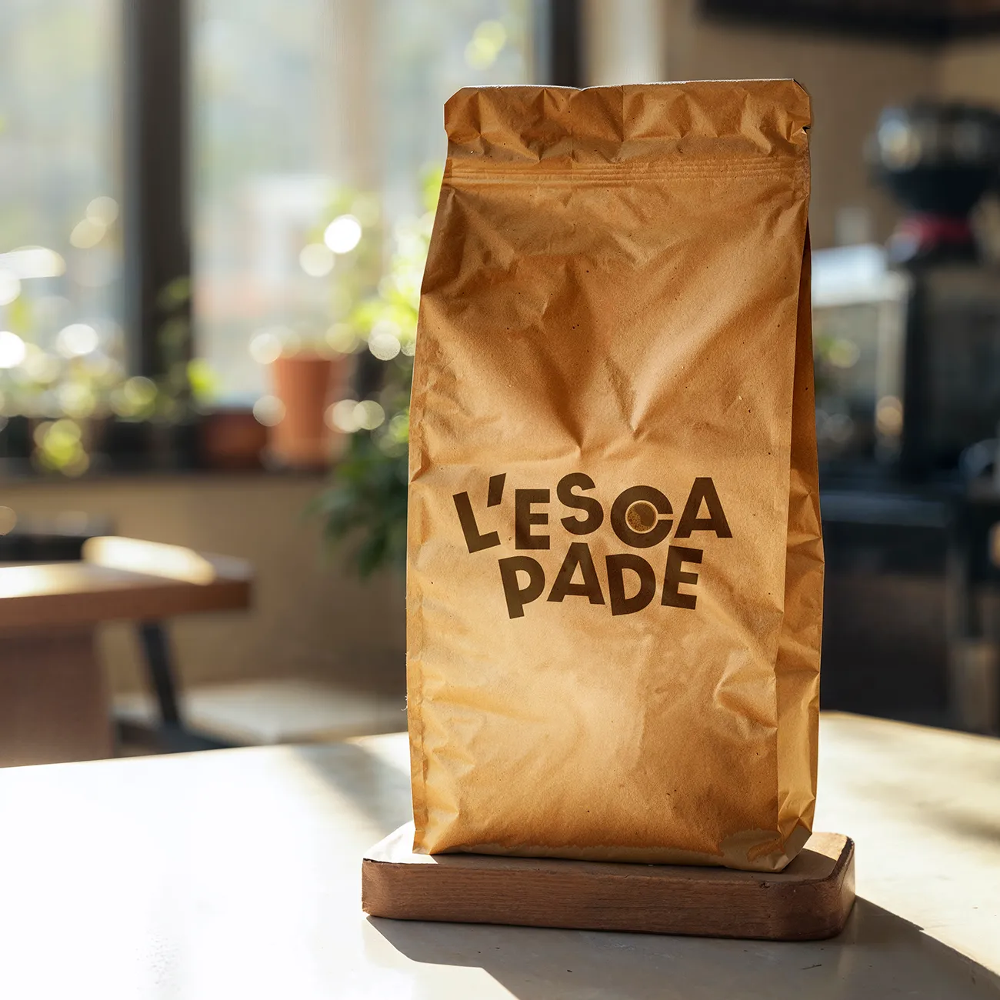
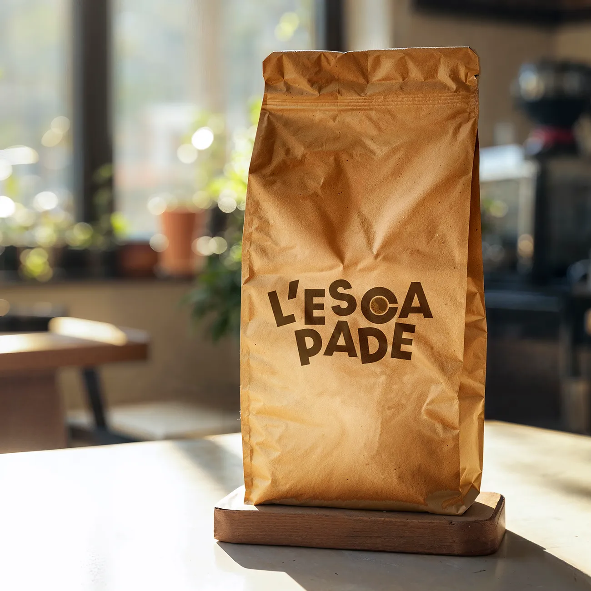

J’ai imaginé « L’escapade », un café fictif à Biscarrosse Plage, alliant détente et activités sportives en extérieur (surf, tennis, padel, volley, yoga…). Ce lieu de rencontre propose des sorties avec le matériel fourni, visant à réduire l’impact écologique et la surconsommation. Les activités permettent de rencontrer de nouvelles personnes, de s’évader du quotidien et de découvrir la ville en profitant de l’air frais.
Dans cette version finale, j’ai fait le choix de placer le café au centre de cette escapade. On distingue alors une tasse de café vue du dessus.
 
